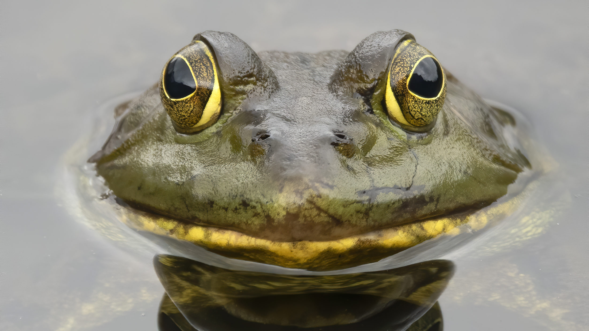
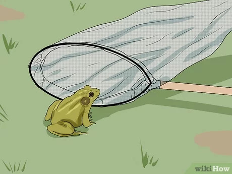

Latest News: Utahns suggested to eat bullfrogs amid invasion

Author: Dr. Musa Mariela
This invasive species can do poses a risk to local ecosystems!
The state of Utah is encouraging residents to catch and eat bullfrogs, an invasive species that threatens native ecosystems. Bullfrogs are highly adaptive and spread easily across the United States, feeding on smaller frogs and competing with native species for food. The animals also carry chytrid fungus, which can be deadly to other amphibians. As part of a wider trend of conservationists urging the consumption of invasive species, some Utah residents are hunting bullfrogs by night and using their eyeshine to identify them before grabbing them. The practice requires a headlamp, two hands and some perseverance.

To catch frogs, you'll need to have a few key tools and techniques. First, you'll need a net with a long handle. You can find these at most sporting goods stores or online. Next, you'll want to locate a body of water where frogs are known to reside, such as a pond or creek. Look for areas with dense vegetation or areas with shallow water. Once you've found a good spot, approach the water slowly and quietly. Frogs have excellent hearing and are easily frightened. Use your net to scoop up the frog quickly but gently, being careful not to injure it. Practice patience and keep your movements slow and deliberate. With some practice and persistence, you'll soon be able to catch frogs with ease. Remember to release the frogs back into their natural habitat after observing them.
Bullfrogs are known to cause significant ecological damage in areas where they have been introduced. This is because they are a non-native species that can outcompete and prey on native amphibians and other aquatic wildlife. Bullfrogs have a voracious appetite and will consume anything that can fit in their mouth, including smaller frogs, fish, insects, and even small mammals. This can lead to a decline in populations of native species, which can have cascading effects on the ecosystem. In addition, bullfrogs can also carry diseases that can infect native amphibians, further exacerbating the problem. Overall, the introduction of bullfrogs to new areas can have serious and long-lasting ecological consequences.
 Author: Dr. Musa Mariela
Author: Dr. Musa Mariela